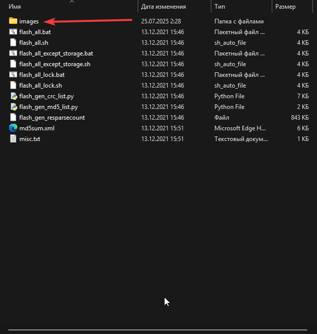

Как я вытащил телефон из комы
Всем привет! В этом посте я расскажу: как я "брикнул" свой телефон, как я его чинил, и способ решения который мне помог.
Часть 1: "Хренов Экспериментатор"
Вся заваруха началась в ночь на 18 июля, через день (19) я должен был уезжать в двух дневный тур на автобусе, и так как ноутбука у меня нет (а без винды ехать я не хотел), я вспомнил про WoA (Windows on ARM) который я ставил раньше (и тоже неудачно, но тогда меня спас рекавери) , и я решил опять попытатся его поставить. Где то часа 2 я пытался нормально разметить диски для установки, в итоге кое как разметил.. Дальше нужно было установить образ Windows на нужный размеченый диск через встроенную утилиту Windows - DISM (говорю кратко, чтобы не затягивать), в итоге все поставилось успешно! Ну и самый последний момент - установка UEFI (от Renegade) вроде прошил, все хорошо... НО! Винда при запуске вылетала в синий экран, я гуглил, искал как пофиксить, в итоге я заебался (потому что суммарно потратил на это все где то 4 часа) и решил через рекавери вайпнуть (очистить) память ПОЛНОСТЬЮ (что и стало моей ошибкой, хотя в прошлый раз я делал также). Итак после очистки, я понял что я даун, оказалось что UEFI от Renegade ПЕРЕСТАВИЛ FASTBOOT и RECOVERY на свои (которые я походу удалил), и в итоге - у меня нет доступа ни к Recovery, ни к Fastboot... Я уже начал думать что кирпич, но...
Часть 2: "Первые попытки починки"
Чучуть покумекав, я решил спросить помощи у ChatGPT - который рассказал мне, что можно замкнуть две точки на плате телефона что бы попасть в режим "EDL" (режим низкоуровневого доступа к процессору, или проще говоря режим через который можно ПРИНУДИТЕЛЬНО зашить прошивку в процессор). Тогда на часах было уже где то 7 часов утра (да я не спал всю ночь), и вот позавтракав, я начал разборку телефона. Сначала снял крышку (это было легко, потому что от крышки у меня остался огрызок который еле держался на телефоне) и чтобы добратся до этих "тестпоинтов" мне нужно было открутить вторую крышку, закрывающую остальные платы, и тестпоинты. Я начал откручивать вроде открутил все, пытаюсь снять кришку... не выходит. Я долго думал где я проебал неоткрученый винт, а потом пригляделся и увидел маленькую наклейку с логотипом MI, под ней и был финальный болтик. После всей этой оргии, я открыл крышку и начал искать тестпоинты на плате, ими оказались две маленькие бежевые точечки в низу платы. Теперь я начал думать "чем замкнуть их?", тогда пинцета при себе у меня не было, так что пришлось использовать подручные средства. Что я только не использовал - и проволоку, и алюминевую проволоку, всё не замыкает..
Часть 3: "Спасение"
Ну и ближе к 8ми часам вечера, домой пришел мой брат, а у него был ПИНЦЕТ, такой, который нужен мне. И так я попросил у него пинцет, и тут понеслось - я замкнул контакты и подключил к USB (как в туториале), итог - ПК увидел мой телефон в режиме EDL! Но была еще одна проблема - после того как я всё подключил, я на радостях скачал MiFlash и прошивку (Miui 12), нажал заветную кнопку "flash" иииии.... Ошибка.. Она заключалась в том что прошивку через EDL могут делать только ОДОБРЕННЫЕ АККАУНТЫ СЕРВИСНЫХ ЦЕНТРОВ. Тут я уже начал задумоватся о том что "все кирпич нахуй, молодец блять Ярик" но чучуть распросив ChatGPT, он направил меня на XDA, и там я нашел что искал.
Часть 4: "Заветное решение"
Спустя 2 дня моего путешествия, я вернулся домой и начал думать дальше, я чуточку пораспрашивал ChatGPT и он дал наводку на XDA Developers! Я прочитал несколько постов, и узнал то что в файлах прошивки есть файл "prog_ufs_firehose_sdm845_ddr.elf" который отвечает за авторизацию EDL, а также что в интернете есть пропатченая версия этого файла, чтобы авторизация на доступ не проводилась! и так я сидел искал этот файл где то час, и наконец нашел! Потом сделал все по гайду (он ниже), и ТЕЛЕФОН ПРОШИЛСЯ! (кстати я это делал опять ночью). Дальше все по накатанной - прошился в MIUI, и потом поставил кастом (потому что MIUI скушнаа) ну и вот!
Решение (ГАЙД)
Итак чтобы решить проблему вам нужно скачать пропатченый файл .elf по ссылке
Дальше нужно скачать прошивку MIUI 12, распаковать ее, и найти в файлах папку images

Далее найдите в ней файл "prog_ufs_firehose_sdm845_ddr.elf", скопируйте его название, удалите (или переместите в другое место).
После переменуйте скачаный файл и переменуйте его в "prog_ufs_firehose_sdm845_ddr.elf", переместите его в папку images.
Дальше зайдите в MiFlash, подключите телефон в EDL, и выберете папку с прошивкой (там где лежит папка images с пропатченым файлом), прошейте телефон (сначала может появится ошибка (как было у меня), но потом телефон должен прошится!) Готово
Долго читать? Можешь прочитать укороченную версию от ИИ!